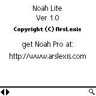
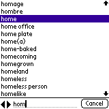
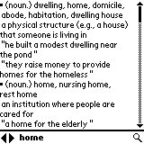
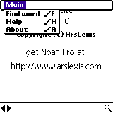

| |
Products | Downloads | Buy | Documentation | News | Support |
|
Noah Lite comes in a noah_lite.zip file that contains:
|  Upon startup Noah Lite displays by default About screen. |
 Starting to type a word or pressing the spyglass icon brings the screen with list of words. The list will automatically scroll to the nearest word matching entered text. List can also be navigated in following ways:
Pressing Cancel button returns to main screen. |
| 
Tapping on a word or pressing "return" (in Graffiti it's a move from
upper right to lower left corner) brings word definition. If a definition
doesn't fit on one screen it can be scrolled using hardware up/down
buttons, by tapping on the screen (tapping on the upper part scrolls up, on
the lower part scrolls down), scrollbars or 5-Way Navigator's up/down buttons
(available e.g. on Treo or Tungsten). You can move to next/previous word by using left/right arrows. |
 Some functions can be invoked via menu:
|
 If upon startup Noah Lite shows "Cannot find database. Please see manual
for more information." error message it usually means that the dictionary
database file (dict.pdb) has
not been installed on the device. Please verify that the file is present
in internal memory (Noah Lite doesn't support external memory card such
as SD/MMC card or Memory Stick).
If upon startup Noah Lite shows "Cannot find database. Please see manual
for more information." error message it usually means that the dictionary
database file (dict.pdb) has
not been installed on the device. Please verify that the file is present
in internal memory (Noah Lite doesn't support external memory card such
as SD/MMC card or Memory Stick).
|